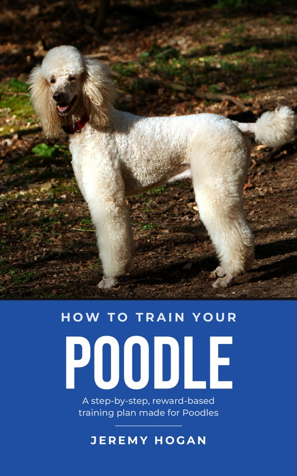

How to train your
A step-by-step, reward-based training plan made for Poodles: a 94-page PDF ebook plus 7 printable bonuses.
$27 one-time payment
Get How to Train Your Poodle – $27Instant digital download (PDF files). 60-day money-back guarantee.
Your Poodle is smart, people-loving and athletic, and comes in three sizes with a coat that keeps growing. Generic training tips often skip the things Poodle owners care about most: a dog who has to stand calmly for brushing, clipping and nail trims, a quick learner who gets bored (and bouncy) fast, a retriever who carries off socks, and the very different needs of a Toy, a Miniature and a Standard.
How to Train Your Poodle is a reward-based training ebook written around this one breed. It takes you from the first day of training through a 30-day plan, with short daily sessions and printable checklists.
Every lesson includes a printable checklist, and most lessons also have learning goals, plain-English teaching, a step-by-step exercise, common mistakes (with a better way) and a recap. Module 8 is a day-by-day plan.
Reward-based methods only. No choke, prong, shock or bark collars, no leash jerks, no punishment.
For guarding, aggression, fear or medical concerns, see your veterinarian first, then a certified trainer or veterinary behaviorist. The book shows you how to prepare for those visits.
Not for: anyone looking for punishment-based or “dominance” methods, as a replacement for professional help with serious aggression or guarding, or as a clipping or show-grooming manual (the trim itself is left to a professional groomer).
If you're not happy with it for any reason, you can request a full refund within 60 days of your purchase date.
How to request a refund: contact Digistore24 support through the link in your order confirmation email. Digistore24 processes the refund to your original payment method.
Hi, I'm Jeremy Hogan. I'm 49, originally from San Diego, and these days I call Bellingham, Washington home, at least when I'm not on the road. I live the van life, and I love meeting people, exploring new places, and traveling wherever the road leads. My constant companion through all of it is my dog, Shelby.
PDF files: the 94-page ebook (6 × 9 in) and 7 bonus printables. They read on a phone, tablet or computer, and they print well at home.
Right after purchase, your download link appears on the order confirmation page and is also emailed to you.
No. It works for puppies, adolescents and adults. Puppy tips appear throughout the lessons, Lesson 6.5 covers puppy mouthing and nipping, and the first-week guide and milestone tracker are for puppies.
Yes. Your dog’s profile in Lesson 1.1 records the size, Lesson 2.1 shows how to size treats for each, Lesson 5.5 covers what changes for a Toy, a Miniature and a Standard, and lessons throughout add size notes.
No. Lesson 5.2 teaches your dog to stand and stay calm for brushing, combing, clippers and nail trims, and Lesson 5.7 explains coat care and the common clips so you can talk to your groomer. The trim itself is left to a professional groomer.
This book is not a substitute for professional help. Please see your veterinarian first, then a certified trainer or veterinary behaviorist. The book includes safe management and prevention habits, plus a visit prep kit to help you work with them.
No. This book is not affiliated with, sponsored by or endorsed by the American Kennel Club.
$27 one-time payment
Get How to Train Your Poodle – $27Instant PDF download · 60-day money-back guarantee · Secure checkout by Digistore24
Do you have an audience of dog owners? Promote How to Train Your Poodle through Digistore24 and earn a 50% commission, which is about $11.93 per $27 sale to US buyers after Digistore24's fee.
Tracking: Digistore24 promolink cookie, up to 365 days (US) / 180 days (EU), last click wins. Commissions are paid by Digistore24 on the 7th, 14th, 21st and 28th of each month.
No spam, no income or health claims, and always disclose that you're an affiliate. Questions: hardworkingin2024@gmail.com